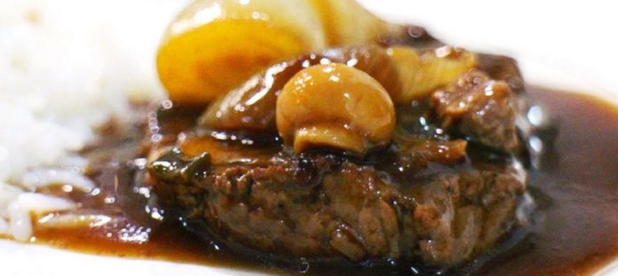

Carnes
Carnes
Filé ao molho de vinho
Ingredientes
- 1/2 colher de sopa de manteiga
- 1 kg de filé mignon cortado em bifes grossos
- 3 colheres de chá de caldo de carne
- 1 cebola picada
- 1/2 xícara de chá de vinho branco seco
- 1/2 colher de sopa de farinha de trigo
- 1/2 xícara de chá de champignons fatiados
- 1 colher de sopa de salsa picada
Modo de preparo
- Aqueça uma frigideira grande, derreta a manteiga, e coloque os filés, deixe fritar bem dos dois lados.
- Acrescente a cebola, o caldo, o vinho branco e a farinha de trigo dissolvida em 1/2 xícara de chá de água.
- Mexa bem e adicione os champgnons e a salsa.
- Deixe cozinhar por cerca de 5 minutos.
Bobó de camarão
Ingredientes
- 500 gramas de camarão médio descascado e limpo
- Suco de 1 limão
- Sal e pimenta do reino a gosto
- 2 cebolas grandes picadas
- 3 dentes de alho amassados
- 1 xícara de chá de maionese de sua preferencia
- 2 xícaras de chá de tomates picados
- 4 xícaras de chá de mandioca cozida e passada pelo espremedor
- 1 xícara de chá de leite de coco
- 3 colheres de sopa de azeite de dendê
- 1 xícara de chá de coentro picado
Modo de preparo
- Tempere o camarão com suco de limão, sal e a pimenta.
- Deixe tomar gosto por 15 minutos e reserve.
- Doure em fogo médio as cebolas e o alho em 5 colheres de sopa de maionese.
- Acrescente os tomates e deixe até desmanchar.
- Junte o purê de mandioca e o leite de coco e misture bem, cozinhe por 10 minutos.
- Acrescente o camarão reservado e o restante da maionese e deixe por mais 5 minutos, junte o azeite e o coentro e misture bem e sirva quente.
Lagarto com molho de azeitona

Ingredientes
- 1 kg de lagarto
- Sal a gosto
- 1 xícara de chá de maionese de sua preferencia
- 1/2 xícara de chá de azeitona verde picada
- 1/2 xícara de chá de azeitona preta picada
- 3 colheres de sopa de pepino em conserva picado
- 1 colher de sopa de molho inglês
Modo de preparo
- Numa panela de pressão, cozinhe o lagarto com 1/2 litro de água e o sal em fogo médio, por 40 minutos.
- Deixe esfriar e embrulhe em papel alumínio, leve a geladeira até o dia seguinte.
- Corte em fatias bem finas e reserve.
- Misture bem todos os ingredientes para o molho, sirva sobre as fatias reservadas.